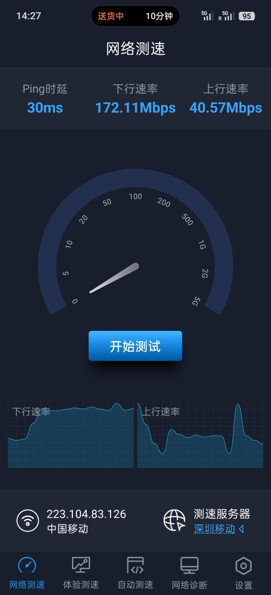
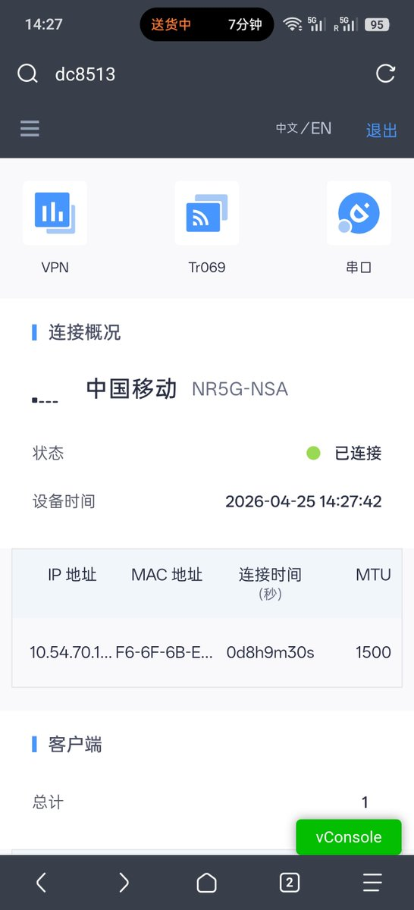
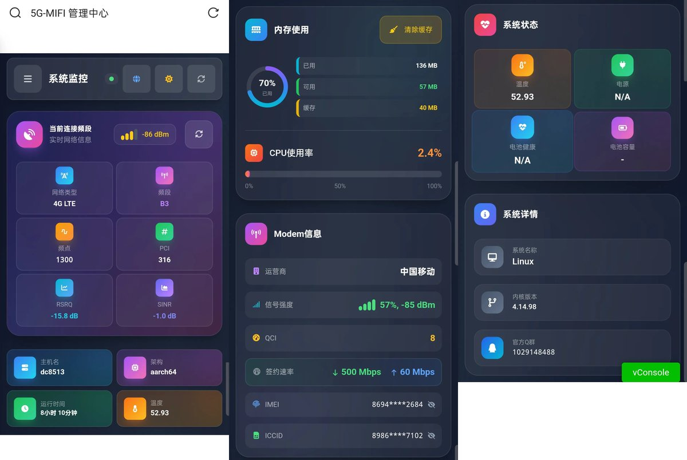

最近朋友去深圳打工，租住的城中村被房东&电信宽带垄断，搬的新家是15层高楼，信号太差了只能勉强跑200M，不过1楼信号倒是很好于是请我出谋划策。至于上网卡，飞猫M2卡 400开的2年套餐，设备用的是中兴F50 深分类5G DTU RG500U模组
把深分类重新刷了官方ROOT固件+高级后台，同一个位置信号强度比F50高8-9db，再用上去年闲鱼200捡的 带的普通胶棒天线 估计也不太好，换思科的增益天线应该还会好点(太贵了 一套天线要100)
他买的这个设备没有WIFI模组，之前是零距固件，估计被卖家拆了，又在闲鱼花15买了个高通WIFI模块，希望能用，零距固件不支持WIFI 但是有网页AT命令，但是我发现高级后台也有这个功能，就刷回官方ROOT固件了
把深分类重新刷了官方ROOT固件+高级后台，同一个位置信号强度比F50高8-9db，再用上去年闲鱼200捡的 带的普通胶棒天线 估计也不太好，换思科的增益天线应该还会好点(太贵了 一套天线要100)
他买的这个设备没有WIFI模组，之前是零距固件，估计被卖家拆了，又在闲鱼花15买了个高通WIFI模块，希望能用，零距固件不支持WIFI 但是有网页AT命令，但是我发现高级后台也有这个功能，就刷回官方ROOT固件了


